This project relied heavily on having realistic and physically accurate fluid simulation. For this part of the project, we primarily based our work off the Position Based Fluids paper from Macklin and Muller. Then, we referenced the Visual Stimulation of Rapidly Freezing Water based on Crystallization paper for freezing.
We were initially inspired by FLIPing Fluids, a Sp23 team, to use the Fluid Implicit Particle (FLIP) solver due to its high algorithmic efficiency. However, this method did not model individual particles, it modeled an aggregate of particles within each voxel. Since our end goal was to model water freezing, we pivoted to using Position Based Fluids to model individual water particles. As far as we know, we are the first team to implement freezing water in this class. We also couldn’t find any public repositories on this, which made implementing it novel and challenging.
In order to implement our main fluid simulation, we followed the algorithms outlined in the Position Based Fluids paper. For this part of the project, we modeled each particle of water in a Particle class that stored information on the position, velocity, and any important variables about each particle that needs to be tracked. After initializing our scene, which involved setting up the boundaries of our simulation and setting the initial values for our particles, we followed the simulation loop outlined in the paper. This involved enforcing a set of constraints and applying forces that mimic fluid behavior.
The first step of the loop involved applying our external forces. For this project, our only external force acting on our water particles is gravity. To actually continue with our solver step, we had to find the neighbors for each particle. In order to do this, we used a similar technique to what we did for our cloth sim project. We built out a spatial map where each key was a boundary within the bounding boxes that we defined and the values were the particles that were in the bounding box. So if we wanted to get the neighbors of a particle, we would hash its position and query the mapping.
For the solver loop, the first constraint that we needed to enforce was incompressibility. Conceptually, this means that the density of particles within a flow of particles is constant throughout time. Since we can only simulate a finite number of particles, the solution to this is only an approximation. According to the paper, the SPH density estimator for particle i and neighbors particles j is defined as:
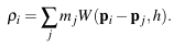where mj is the mass of each water particles and W is defined as the Poly6 kernel:
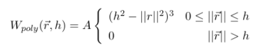 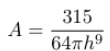This is used along with the rest density p0 to calculate the incompressibility constraint Ci:
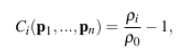In order to calculate the variables we need to find the position updates that allow us to enforce incompressibility, we also need to calculate the gradient of Ci for all particles i. According to the paper, this is given by:
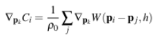Here, instead of the Poly6 kernel function, we use the gradient of the Spiky kernel as defined by:
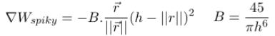This combined with the above equations is used to calculate lambda values for each particle i:
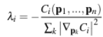One issue with this is the value is unstable if the denominator is zero or close to zero, so we also add a relaxation constant epsilon to adjust for this:
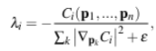After calculating this value for all of the particles, we can calculate the positional update for each particle as the following with neighbors j:
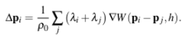This update is then applied to the position attribute for each of the particles to adjust for our incompressibility constraint. This alone, however, causes particles to clump when there are no neighbors around them. As a result, we also want to add an artificial pressure term when we calculate the positional update:
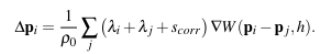 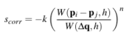We also want to apply a vorticity force to make the water simulation more realistic, applying a force to allow for fluid rotation. First, we calculate an estimator wi as follows:
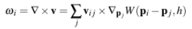 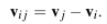Using this, the force applied to particle i is as follows:
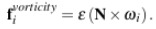 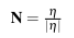 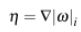Where the gradient of the magnitude of wi is approximated as the following (according to a past project from this class)
We also wanted to add viscosity as another property of our fluid simulation. This is to simulate the resistance to flow that liquids have. For this part of the simulation loop, we only need t update the velocity as follows:
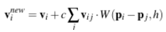